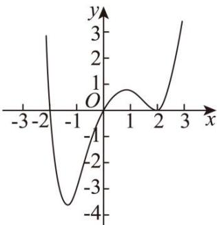

深圳中学 2024 级高二数学周测（7）
一、选择题：本题共8小题，每小题5分，共40分.在每小题给出的四个选项中，只有一个选项是正确的.
1. 下列求导结果正确的是（）
A. \((\sin3)'=\cos3\)
B. \((\cos x)'=\sin x\)
C. \(\left(\frac{\mathrm{e}^{x}}{x}\right)^{\prime}=\frac{\mathrm{e}^{x}(x-1)}{x^{2}}\)
D. \((\ln 2x)'=\frac{1}{2x}\)
2. 某地的中学生中有 \(60 \%\) 的同学爱好滑冰, \(50 \%\) 的同学爱好滑雪, \(70 \%\) 的同学爱好滑冰或爱好滑雪.在该地的中学生中随机调查一位同学, 若该同学爱好滑雪, 则该同学也爱好滑冰的概率为 ( )
A. 0.8
B. 0.6
C. 0.5
D. 0.4
3. 当 \(x = 1\) 时，函数 \(f(x) = a\ln x + \frac{b}{x}\) 取得最大值-2，则 \(f^{\prime}(2) = (\quad)\)
A. -1
B. \(-\frac{1}{2}\)
C. \(\frac{1}{2}\)
D. 1
4. 已知函数 \(f(x)\) 的定义域为 \(\mathbf{R}\) ，且 \(f(x)\) 的图象是一条连续不断的曲线， \(f(x)\) 的导函数为
\(f'(x)\) ，若函数 \(g(x)=(x+2)f'(x)\) 的图象如图所示，则（） A. 2 是 \(f(x)\) 的极值点 B. \(f(x)\) 的单调递增区间是 \((-1,1)\) ， \((2,+\infty)\)
C. \(f(x)\) 的单调递减区间是 \((-\infty,0)\)
D. 当 x=1 时， \(f'(x)<0\)

5. 若经过点 \((0, -2)\) 的直线 l 与曲线 \(y = \ln x\) 相切，也与曲线 \(y = e^{x} - a (a \in \mathbb{R})\) 相切，则 \(a = (\quad)\)
A. \(\frac{3}{2}\)
B. 1
C. 2
D. e
6. 定义在 \(\mathbf{R}\) 上的函数 \(f(x)\) 的导函数为 \(f'(x)\) ，若对任意实数 \(x\) ，有 \(f(x) > f'(x)\) ，且 \(f(x) + 2026\) 为奇函数，则不等式 \(f(x) + 2026\mathrm{e}^x < 0\) 的解集是（）
A. \((- \infty, 0)\)
B. \((- \infty, \ln 2026)\)
C. \((0, +\infty)\)
D. \((2026, +\infty)\)
7. 设 \(a \neq 0\) ，若 \(a\) 为函数 \(f(x) = a(x - a)^2(x - b)\) 的极大值点，则（）
A. \(a < b\)
B. \(a > b\)
C. \(ab < a^2\)
D. \(ab > a^2\)
8. 已知函数 \(f(x) = \mathrm{e}^x - \mathrm{e}^{-x} - \sin 2x\) ，若对 \(\forall x \in [2, +\infty)\) ， \(f(\ln x) + f(-ax) < 0\) ，则实数 \(a\) 的取值范围是（）
A. \(\left(-\infty, \frac{\ln 2}{2}\right)\)
B. \(\left(-\infty, \frac{1}{\mathrm{e}}\right)\)
C. \(\left(\frac{\ln 2}{2}, +\infty\right)\)
D. \(\left(\frac{1}{\mathrm{e}}, +\infty\right)\)
二、多选题：本题共3小题，每小题6分，共18分.在每小题给出的四个选项中，有多项符合题目要求.全部选对的得6分，部分选对的得部分分，选对但不全的得部分分，有选错的得0分.
9. 已知 \(\overline{A}\) , \(\overline{B}\) 分别为随机事件 \(A\) , \(B\) 的对立事件, 若 \(P(A) = \frac{1}{6}\) , \(P(B) = \frac{1}{2}\) , \(P(A|B) = \frac{1}{3}\) , 则下列选项正确的是 ( ).
A. \(P(AB) = \frac{1}{6}\)
B. \(P(B|A) = \frac{5}{6}\)
C. \(P(\overline{A}|B) = \frac{2}{3}\)
D. \(P(A + B) = \frac{1}{3}\)
10. 若将一边长为4的正方形铁片的四角截去四个边长均为x的小正方形，然后做成一个无盖的方盒，则下列说法正确的是（）
A. 当 \(x=\frac{2}{3}\) 时，方盒的容积最大 B. 方盒的容积没有最小值 C. 方盒容积的最大值为 \(\frac{128}{27}\)
D. 方盒容积的最大值为 \(\frac{64}{27}\)
11. 设函数 \(f(x) = m\ln x - x\) , \(g(x) = -\frac{1}{3}x^3 + x + a\) ，则下列结论正确的是（）
A. 当 \(m = 1\) 时， \(f(x)\) 在点 \((1, f(1))\) 处的切线方程为 \(y = -1\)
B. 当 \(-1 < a < 1\) 时， \(g(x)\) 有三个零点
C. 若 \(F(x) = f(x) - g'(x)\) 有两个极值点，则 \(0 < m < \frac{1}{8}\)
D. 若 \(f(mx) \geq e^x - mx\) 在 \((0, +\infty)\) 上有解，则正实数 \(m\) 的取值范围为 \([e, +\infty)\)
三、填空题：3 小题，每小题 5 分，共 15 分.
12. 湘绣, 是中国优秀的民族传统工艺之一, 有着两千多年的历史. 湘绣的制作工艺繁杂, 只有设计图案通过后才能进行刺绣. 某绣坊准备制作 \(A, B, C\) 三幅不同的湘绣作品, 已知 \(A, B, C\) 三幅作品通过设计图案环节的概率依次为 \(\frac{3}{4}, \frac{2}{3}, \frac{4}{5}\) . \(A, B, C\) 三幅中恰有一幅作品通过设计图案环节的概率为 ____.
13. 已知函数 \(f(x) = (x - a)\ln x\) 在区间[1,2]上存在单调递减区间，则 \(a\) 的取值范围为 ____.
14. 已知函数 \(f(x)=\left\{\begin{aligned}-x^{2}-2x,x&\leq0\\ \ln x,x&>0\end{aligned}\right.\) ，函数 \(g(x)=f(x)-a\) 有三个零点 \(x_{1},x_{2},x_{3}\) ，则 \(x_{1}\cdot x_{2}\cdot x_{3}\) 的取值范围为 ____.
答题卡
班级____ 姓名____ 分数____
| 选择题 | 多选题 | |||||||||
| 1 | 2 | 3 | 4 | 5 | 6 | 7 | 8 | 9 | 10 | 11 |
12. ____ 13. ____ 14. ____
四、解答题：本题共2小题，共27分. 解答应写出必要的文字说明、证明过程或演算步骤.
15. 已知函数 \(f(x) = \frac{x^2}{2} - a\ln x - (a - 1)x - \frac{a}{2}\) .
(1)当a=-1时，求曲线 \(y=f(x)\) 在点 \((1,f(1))\) 处的切线方程；
(2)讨论 \(f(x)\) 的单调性;
(3)若 \(f(x)\) 有极小值，且 \(f(x)\geq0\) ，求a的取值范围.
16. 已知函数 \(g(x)=\mathrm{e}^{x}-2a(x-1)\) ，e 为自然对数的底数.
(1)若函数 \(g(x)\) 在 \((1,+\infty)\) 上有零点，求 a 的取值范围；
(2)当 \(a > 0\) ， \(x_{1}\neq x_{2}\) ，且 \(g(x_{1}) = g(x_{2})\) ，求证： \(x_{1} + x_{2} < 2\ln (2a)\)